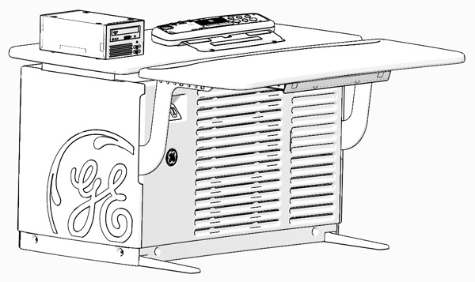
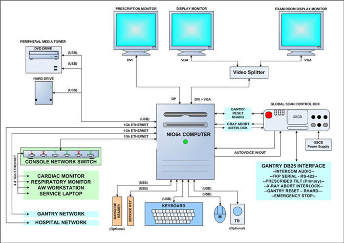
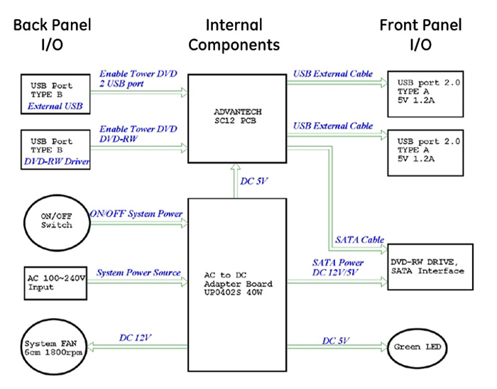
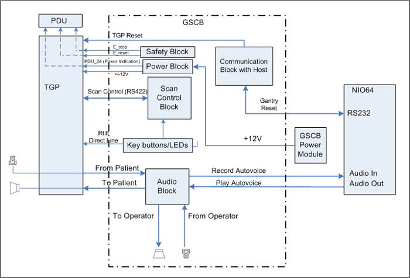
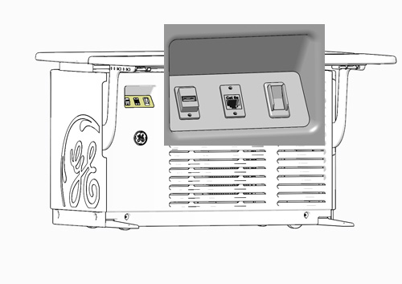
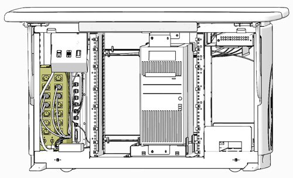
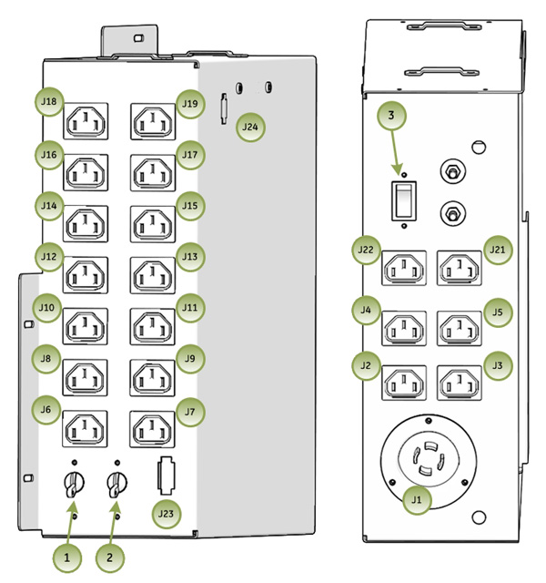
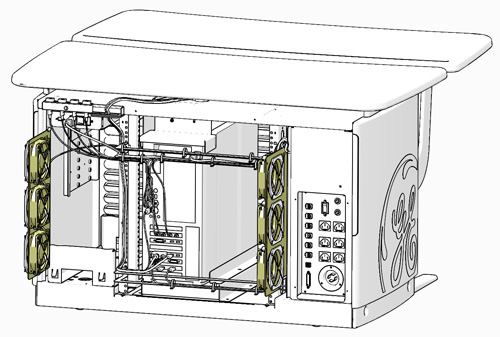

Operating Documentation
Direction 5193574-800, Rev# 22
LightSpeed 7.X Service Methods
Module Version 2.0, Version Date 12/17/13
Operating Documentation |
| Last Revised: | December 17, 2013 |
The Global Operator Console GOC6.6 VCT is the latest version of a continually evolving line of GE Healthcare CT Operator Consoles. Introduced in 2013, this console utilizes new computer technologies to provide system control, high-speed data acquisition, and image generation and reconstruction processes.
Illustration 1: GOC 6.6 VCT Operator Console

The GOC6.6 VCT console is a “Next in One” NIO64 computer housed inside a Global Operator Console (GOC) cabinet. The NIO64 Computer is the master controller of the system through the system’s local area network. With this generation of console, all systems functions have been consolidated into a single computer through advances in the number of processor cores and core speeds, 64 bit computer architecture and GPU based reconstruction hardware.
The following is a brief overview of the basic computer component groups included with the GOC 6.6 VCT.
Table 1: GOC 6.6 Operator Console Components
| GOC 6.6 Console | VCT FREEdom |
|---|---|
| NIO64 Computer (HP Z820) | X |
| Peripheral Media Tower (Single Bay - DVD Multimedia) | X |
| Accessories (Monitors, Keyboard, and Mouse and Trackball) | X |
| System Software | X |
| Console Network Switch (CNS) - 8 Port | X |
| Global Scan Control Box (GSCB) | X |
| Power Distribution Box | X |
| Rear Bulkhead Panel | X |
| Power Switch Panel | X |
| Cooling Fans | X |
The NIO64 computer in the GOC 6.6 VCT is the master operation controller of the CT system. The computer controls the acquisition, reconstruction, image generation, display, archive, and output (i.e. film, DICOM, etc.) of patient data and images.
The NIO64 computer accomplishes these tasks by taking input from the user via keyboard, mouse and trackball. This input along with the operating and application software loaded on the computer is used to control and communicate with the component groups responsible for image generation, reconstruction and display. The NIO64 computer communicates via Gigabit Ethernet interface with the following:
Gantry/Table
AW Workstation (Optional)
Hospital Network
Illustration 2: GOC6.6 VCT Host Computer Subsystem Diagram

In the GOC 6.6 VCT, the NIO64 Computer is a Commercial Off The Shelf (COTS) Workstation (HP - Z820). The NIO64 Computer video display ports, connected to two display monitors, handle visual display of the Prescription and Display screens. Optionally, the Display monitor video signal can be shared with a second Scan Room display utilizing a video splitter/amplifier.
The User keyboard, mouse, and trackball connect with the NIO64 computer via standard USB 2.0 interfaces. The NIO64 computer integrated audio controller is used for the Autovoice feature and interfaces with the GSCB via standard analog audio PC connections on the computer. The NIO64 computer also interfaces with an external Peripheral Media Tower via USB 2.0.
See NIO64 (Z820) Computer Theory for more details on the computer.
Illustration 3: Peripheral Media Tower (PMT-20)

The Peripheral Media Tower is interfaced to the NIO64 computer using USB 2.0. The following block diagram shows this interface and the SATA to USB Bridge adapters needed to connect the more commercially available DVD Optical Drives.
| NOTE: | Early production model of GOC6.6 VCT console may use Peripheral Media Tower (PMT-11) which has two-bay enclosure. But the functionality of (PMT-11) is exactly the same as PMT-20. |
Illustration 4: Peripheral Media Tower (PMT-20) Block Diagram

DVD Multimedia Drive (PMT-20, Single Drive Tower):
The DVD Multimedia drive is an optical storage device used for data interchange (i.e. transfer of data to other systems) and for archiving data. This drive support DVD-R, DVD-RW, and DVD-RAM (without cassette) and CD media.
PMT Front Panel USB Ports (PMT-20, Single Drive Tower):
The PMT has two USB ports mounted on the front panel for supporting both customer and service features. These port may be used for connecting USB Bar Code Reader, USB Storage HDD (optional) or USB Flash Memory. These USB ports are power assisted via the internal USB Hub board located inside the PMT chassis.
The GOC 6.6 VCT is equipped with two (2) 19 inch LCD flat panel monitors residing at the Operator Console. An optional display monitor may also be present in the Scan Room.
The GOC 6.6 VCT is equipped with PC compatible USB 2.0 101-key keyboard residing at the Operator Console along with the Global Scan Control Box (GSCB) Assembly. Support for international language keyboards is available optionally. The keys are labeled in languages as identified by GEHC Language Policy. The keyboard is physically attached to the GSCB with the use of a mounting plate, keeping the operator controls close together.
The GOC 6.6 VCT is equipped with a USB optical mouse residing at the Operator Console. The mouse connects to the Host Computer via a USB 2.0 interface.
Left button - single click select
Middle button - adjusts image display window width and window level
Right button - scrolling images, magnification, and for accessing hidden menus
The GOC 6.6 VCT is equipped with USB Trackball residing at the Operator Console. The trackball is a 3-button device that connects to the Host Computer through a USB 2.0 interface.
Left button - prior button
Middle button - paging button
Right button - next button
Trackball - The trackball has two functions. The first, while not in the paging mode, adjusts the window width and window level of the image. Moving the trackball left decreases the window width, while moving right increases window width. Moving the trackball down decreases the window level while moving it up increases the window level. While in the paging mode, moving the trackball up pages through the sequence from beginning to end at a rate dependent on the speed at which you move the trackball. Moving the trackball down pages through the sequence from end to beginning at a rate dependent on the speed at which you move the trackball.
The GOC 6.6 VCT console is loaded with a Suse Linux Enterprise Server (SLES) 64 Bit Operating System (OS) and GE Healthcare CT Application (APPS) software.
The following block diagram illustrates the general software architecture used with the GOC 6.6 VCT console. Unlike previous generations of consoles, all operating and application software is resident on the NIO64 Computer.
Illustration 5: Software Overview Block Diagram

To support the GOC 6.6 VCT console, the following Operating Software (OS) is required: GEHC-SLES-11-SP1
Application Software (APPS) versions will vary based on CT System type. Refer to the Software section of the particular service methods publication for more details.
The Global Scan Control Box (GSCB) along with 101-key keyboard supplies the user with the necessary inputs for performing scans. The GSCB supplies a series of switches that allows the user to position the patient using Positioner (Gantry/Table) subsystem without leaving the console and entering the scan room.
Illustration 6: Global Scan Control Box (GSCB)

| Item | Function |
| 1 | E-Stop Button |
| 2 | AutoVoice Volume Control |
| 3 | Volume Control Patient to Operator |
| 4 | Volume Control Operator to Patient |
| 5 | Speaker |
| 6 | Start Scan |
| 7 | Pause Scan |
| 8 | Stop Scan |
| 9 | Prescribed Tilt (Remote Tilt) |
| 10 | Stop Move |
| 11 | Move to Scan |
| 12 | Talk |
| 13 | Microphone |
| 14 | Exposure indicator |
The GSCB connects directly to the NIO64 computer located in the GOC 6.6 VCT console and the Gantry to supply scan, intercom and safety features provided by the GSCB. With the GOC 6.6 VCT console, the ICOM assembly (used in previous console designs) has be incorporated into the GSCB design.
Illustration 7: GSCB Block Diagram

The Operator Console main power switch, along with Service Ethernet and USB ports, are located on the Power Switch Panel. The Power Switch is the main operator power On/Off control for the console and is accessible from the front of the Operator Console.
Illustration 8: Console Power Switch

| NOTE: | It is important to understand that this switch does not
completely remove power from the console, but switches power On/Off
to key components. Always follow appropriate Lock Out / Tag Out procedures
when working in and around the Operator Console. For cabling details, refer to the appropriate interconnect drawings located in the System Diagrams folder of this service methods publication. |
The Power Distribution Box (or Outlet Box) in the left compartment of the Operator Console is responsible for distributing AC Power to the components in the GOC 6.6 console. Incoming power from the Power Distribution Unit (PDU) of the CT System is 2-phase 208 Vac. This incoming 2-phase AC power is routed through Line Filters and Circuit Breakers and then sent to numerous IEC power outlets in a load-balanced manner.
Illustration 9: Power Distribution Box Location in GOC6.6

Illustration 10: Power Distribution Box

| NOTE: | It is important that the console components be connected to specific power outlets on the Power Distribution Box to maintain proper power load balance. |
Table 2: Console Circuit Breakers
| Item | Circuit Breaker | Location | Purpose | Components | |
|---|---|---|---|---|---|
| 1 | CB 1 | Inside console on Power Distribution Box | To protect components plugged into the internal AC Power IEC outlets on Power Distribution Box. (J12 - J19) | Video Amp/Splitter | |
| 2 | CB 2 | Inside console on Power Distribution Box | To protect components plugged into the internal and external AC Power IEC outlets on Power Distribution Box. (J2 - J11) Note: Also protects the console power-on switch contactor’s coil. If contactor fails, J2- J19 will be de-energized. | Console LCD Monitors, Scan Room Monitor, Peripheral Media Tower, NIO64HD Computer, CNS, GSCB Power Module, Console Fans | |
| 3 | CB 3 | Outside console on Power Distribution Box at Rear Bulkhead Connection Panel | To protect Accessories plugged into the external AC Power IEC outlets on Bulkhead Panel. (J21 - J22) | RPM, Injector Accessories | |
| NOTE: | It is important to understand that only method to completely remove power from the console is with the removal of the Twist-N-Lock Power Connector on the rear Console Bulkhead Panel. The Circuit Breakers on the Power Distribution Box and the Console Power Switch only switch different circuits in and out of the energized state. Power is still present in the Power Distribution Box with the Circuit Breakers and Console Power Switch turned off! |
| ||||
| THE ACCESSORY POWER OUTLETS ARE ONLY TO BE USED FOR GE HEALTHCARE APPROVED ACCESSORIES! | ||||
Table 3: Power Distribution Box Power Interfaces
| Connector | Power or Signal | Purpose | Connector |
|---|---|---|---|
| J1 | 208 VAC, 2 θ (phase) | Incoming power for Console | HUBBELL FLANGED INLET HBL 2415 |
| J2-J19 | 120 VAC, 1 θ | Output power for Console components | IEC Power connector, female |
| J21-J22 | 120 VAC, 1 θ | Output power for Accessory components | IEC Power connector, female |
| J23 | 120 VAC, 1 θ | Console Power Switch | MATE-N-LOK 3-position |
| J24 | 24 VDC | “SYSLITE” - PDU notification that Console power state (On/Off) | MATE-N-LOK 2-position |
For cabling details, refer to the appropriate interconnect located in the System Diagrams folder of this service methods publication.
The main communication interface between the console and the rest of the CT System can be found at the rear of the Operator Console. The Bulkhead Panel supplies Ethernet, Gantry/Table and DAS Fiber Optical cable connections. These connections supply pass through points for the console and the connectors are of the type (requiring cables connections on both sides) so that the Rear Bulkhead Panel connectors may be easily replaced in the event that a connector is damaged.
Illustration 11: Console Rear Bulkhead Panel Connections

| Connection | Description - GOC6.6 | Connection | Description - GOC6.6 |
| 1 | RPM (J31) | 8 | Gantry (J20) |
| 2 | EKG (J30) | 9 | Main Console Ground |
| 3 | AW (J29) | 10 | Accessory Grounds (G21 & 22) |
| 4 | Veo BLC(J28) | 11 | Accessory Power Outlets |
| 5 | TGP/INJ (J27) | 12 | Peripheral Media Tower Power Outlet |
| 6 | Hospital (J26) | 13 | Spare |
| 7 | Slipring (J25) | 14 | Console LCD Monitor Power Outlets |
The GOC 6.6 VCT console is equipped with six (6) Cooling Fans, three (3) on each side of the rear console cover. These fans are 120 Vac fans mounted in a manner that draws cooling air from the front of the Operator Console, through the console and exhausting out the back. For proper thermal control, it is important these fans remain operational and that adequate ventilation is provided. Refer to the Pre-Installation Manual for proper clearances.
Illustration 12: Console Rear Cooling Fans
